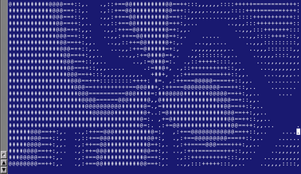
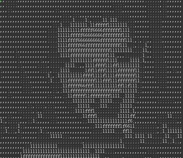

谁说我们编程序一定要遵循一定的编码规则？你是否使用过“匈牙利命名法”，“GNU coding style”，“Linux kernel coding style”。它们都说自己的方式好，别人的不好。但是看看 IOCCC 大赛的程序，你就知道最糟糕的编码规则也能写出很好的程序 :)
IOCCC 的比赛忠旨就是：
这里可以下载历年 IOCCC 程序大赛的所有代码源程序：[下载].
那些程序很多。你可能不知道有些程序怎么用。仔细看看就会发现，每个程序都是那样的精巧！以至于他们的输出结果会让你大吃一惊！
这个程序的代码使用了 ascii-art，看起来像一个风车。你猜它运行起来是什么呢？答案是一个旋转的风车？漩涡？黑洞？

float s=1944,x[5],y[5],z[5],r[5],j,h,a,b,d,e;int i=33,c,l,f=1;int g(){return f=
(f*6478+1)%65346;}m(){x[i]=g()-l;y[i]=(g()-l)/4;r[i]=g()>>4;}main(){char t[1948
]=" `MYmtw%FFlj%Jqig~%`jqig~Etsqnsj3stb",*p=t+3,*k="3tjlq9TX";l=s*20;while(i<s)
p[i++]='\n'+5;for(i=0;i<5;i++)z[i]=(i?z[i-1]:0)+l/3+!m();while(1){for(c=33;c<s;
c++){c+=!((c+1)%81);j=c/s-.5;h=c%81/40.0-1;p[c]=37;for(i=4;i+1;i--)if((b=(a=h*x
[i]+j*y[i]+z[i])*a-(d=1+j*j+h*h)*(-r[i]*r[i]+x[i]*x[i]+y[i]*y[i]+z[i]*z[i]))>0)
{for(e=b;e*e>b*1.01||e*e<b*.99;e-=.5*(e*e-b)/e);p[c]=k[(int)(8*e/d/r[i])];}}for
(i=4;i+1;z[i]-=s/2,i--)z[i]=z[i]<0?l*2+!m():z[i];while(i<s)putchar(t[i++]-5);}}
你能看懂吗？运行后就像远处在向你不断发射连珠炮一样的东西！
你想不到这段代码是2000世界上压缩灰度图像压缩比最大的程序吧？ 它速度很慢，为了防止用户不耐烦， 它在压缩的时候可以在屏幕上显示图像的ascii版本作为进度条:

编译方法：保存为 bmeyer.c
cc -DY= -O6 bmeyer.c -o bmeyer -lm
它只能处理 PGM raw 格式的图片.如果你的是 gif, jpeg 图片，先要把它转成 PGM 得到 pgm 图像的办法，用 ImageMagic 里的 convert 程序: 比如：
convert -size 400x300 cat_01.jpg ok.pgm然后运行这个程序（名字叫 bmeyer) 压缩：
./bmeyer <ok.pgm >ok.glic程序会在在屏幕画出 ASCII …… 爽啊！ 得到压缩的 ok.glic 文件，这个文件用普通图像浏览程序不能直接预览
解压缩：
./bmeyer <ok.glic >ok.pgm
bmeyer -2 可以增加压缩比。